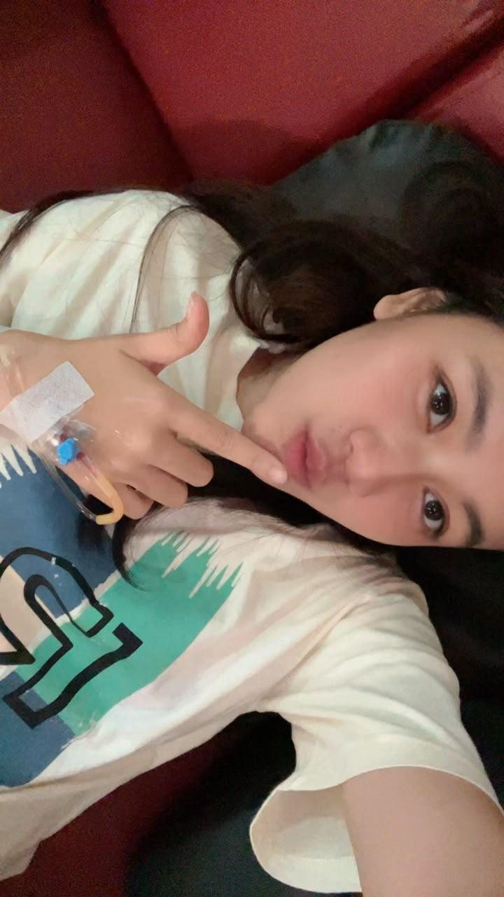
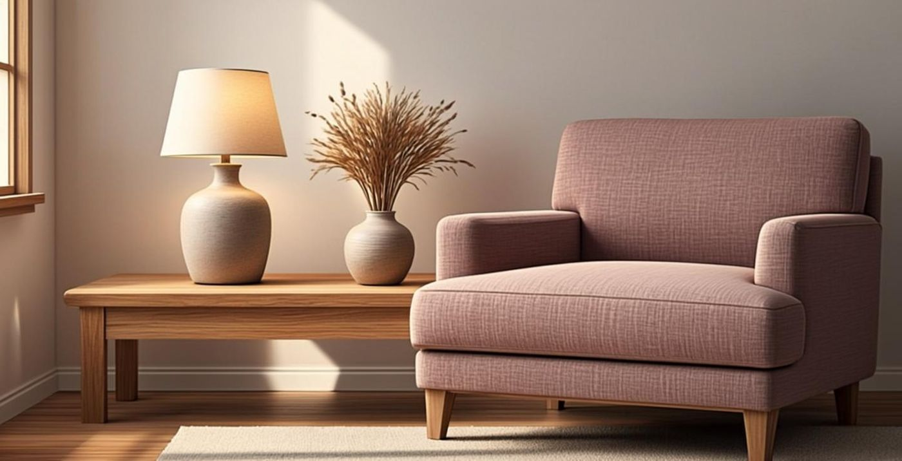
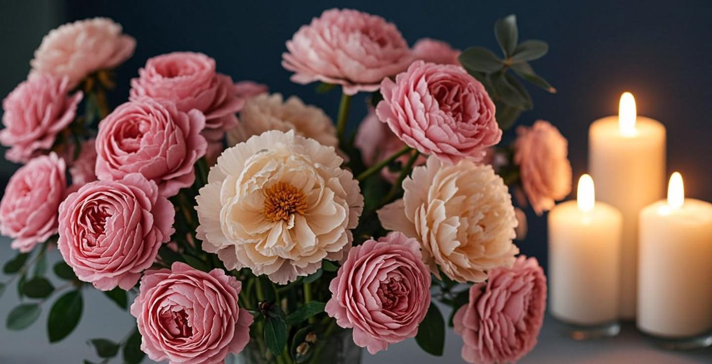
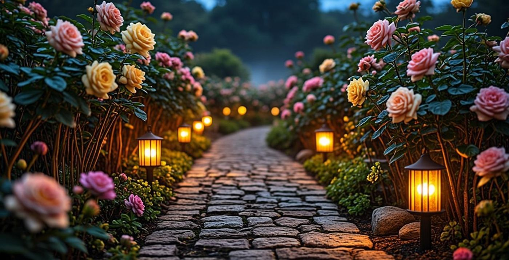
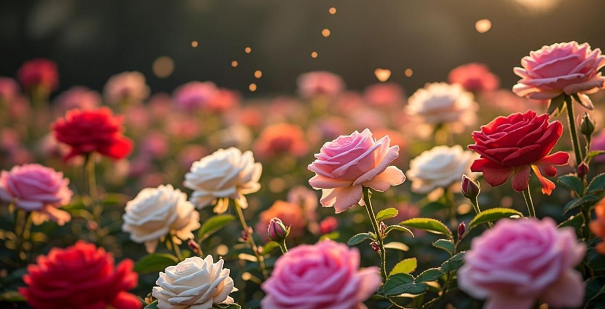
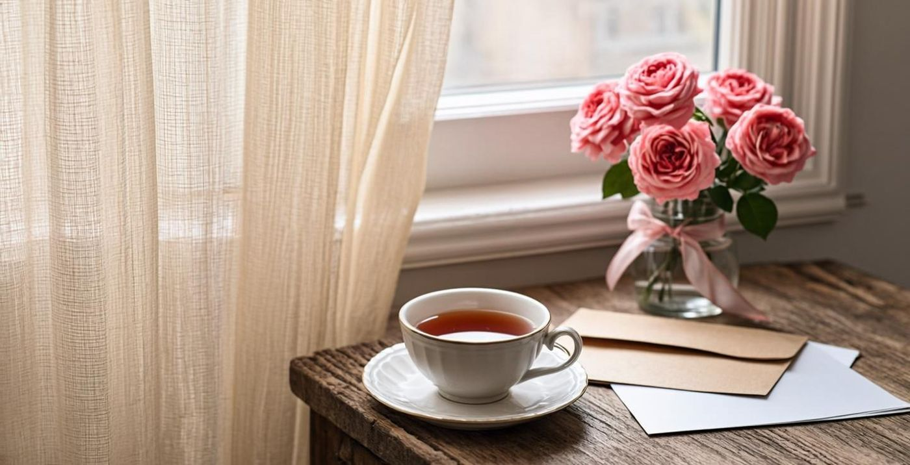

Musik: file pilihan sendiri — assets/audio/Download (5).mp4 (diunggah sendiri, diputar tersembunyi; audio track MP4 yang bersuara). Kalau file gagal dimuat, dicoba Pink Matter via YouTube, lalu piano lembut sebagai cadangan.
Setiap foto punya panggung dan bingkainya sendiri — geser pelan, ketuk panahnya, dan buka album kenangannya satu per satu.

01♡✦
Senyum paling cerah di ruangan. ♡
02♥♡✦
Keceriaan yang selalu menular. ✌
03✦ Portrait Study
The Portrait
✦
Satu juta kehangatan dari satu senyum.
peace, topi & senyum ✌ ♡04♡
Gaya yang selalu jadi ciri khasmu.
05❀❀✦♡
Kumpulan hari-hari kecil yang berharga. ✦
scene 06 · with lovedua hati, satu cerita ♡
A memory I'll always keep ♡
01/06
buka kenangannya satu per satu — pilih yang paling kakak suka ♡
04

Bagian empat · kenangan bergerak
A Little Memory to Keep.
Tekan putar kapan pun kakak butuh sedikit kehangatan — ada suaranya juga.
now playing · for kakak
diputar penuh dengan cinta — bukan sekadar potongan momen ♡
05

Bagian lima · dari hatiku
Sebuah surat, untuk kakak tersayang.
♡
ketuk amplopnya untuk membuka surat
♡27·11·2026 with love for fitri
untuk kakak tersayang,
Happy birthday yang ke-23, Fitri Novia.
Semoga kakak selalu happy, selalu bahagia, dan selalu punya banyak alasan buat tersenyum. Semoga di umur yang baru ini, banyak hal baik datang ke kakak, semua yang kakak harapkan perlahan bisa tercapai, dan hari-hari kakak dipenuhi kebahagiaan.
Jangan terlalu kecapekan ya, kak. Kalau memang lagi capek, istirahat dulu. Jangan terlalu memaksakan diri buat menyelesaikan semuanya. Kakak juga perlu waktu buat diri sendiri, buat tenang, buat menikmati hari, dan buat bahagia tanpa harus selalu sibuk.
Jaga kesehatan, jangan lupa makan, jangan lupa istirahat yang cukup. Aku berharap kakak selalu baik-baik aja, selalu happy, dan nggak kehilangan senyum yang selama ini jadi bagian dari kakak.
Makasih udah jadi kakak yang begitu berarti buat aku. Mungkin aku nggak selalu bisa ngungkapin semuanya, tapi aku sayang kakak, dan aku selalu berharap yang terbaik buat kakak.
Semoga umur 23 ini jadi salah satu chapter paling indah dalam hidup kakak. Semoga banyak kebahagiaan, ketenangan, rezeki, orang-orang baik, dan cerita indah yang datang.
Happy birthday, Fitri. Stay happy, take care of yourself, and please don't forget to rest. I love you, kak. ♡
— adikmu, yang selalu sayang kakak ♡
06

Bagian enam · garis waktu
Jejak kecil yang layak dikenang.
Beberapa tempat untuk kenangan kalian berdua — tanggal, tempat, dan ceritanya bisa ditambahkan sendiri dengan mudah.
Kenangan pertama
Tanggal — tulis di sini
Tulis cerita kecil tentang kenangan pertama yang paling kalian ingat. Satu atau dua kalimat yang hangat sudah cukup.
✎ teks ini bisa diganti langsung di index.html
Kenangan berikutnya
Tanggal — tulis di sini
Cerita kedua bisa tentang momen lucu, momen haru, atau hal kecil yang ternyata paling berkesan.
✎ teks ini bisa diganti langsung di index.html
Kenangan favorit
Tanggal — tulis di sini
Cerita ketiga — mungkin tentang tempat favorit, makanan favorit, atau kebiasaan kalian berdua.
✎ teks ini bisa diganti langsung di index.html
…dan bab berikutnya
27 November 2026
Hari ini, chapter 23 dimulai — dan hal-hal baik sedang menunggu di depan.
07

Bagian tujuh · kenapa kakak istimewa
Karena kakak, banyak hal jadi lebih hangat.
01
Terima kasih sudah menjadi kakak yang begitu berarti.
02
Semoga kakak selalu menemukan alasan untuk bahagia.
03
Semoga setiap usaha kakak membawa hasil yang baik.
04
Semoga kakak selalu dikelilingi orang-orang baik.
08

Bagian delapan · sedikit pengingat
Untuk kakak, yang selalu sibuk.
♡
Jangan terlalu capek, ya, Kak.
Jangan lupa istirahat.
Jaga kesehatan.
Luangkan waktu untuk diri sendiri.
Jangan lupa bahagia.
♡
09
Bagian sembilan · sebuah hadiah
Ada satu kotak lagi, khusus untuk kakak.
Buka pelan-pelan. Isinya tidak bisa hilang dan tidak akan pernah usang.
♡✦♡✦♡
ketuk pita untuk membukanya
a little keepsake
Untuk Fitri Novia
Halaman ini dibuat khusus untuk kakak — setiap foto, setiap kata, dan setiap bunganya. Kapan pun kakak butuh tempat untuk istirahat, tersenyum, atau sekadar ingat bahwa kakak dicintai, buka lagi halaman ini. Semua akan tetap menunggu di sini, apa adanya.
dari adikmu, hari ini dan selalu ♡
10
Bagian sepuluh · bab baru
23
Chapter Twenty · Three
“May this new chapter bring you more happiness, peace, beautiful memories, and wonderful opportunities.”
Semoga bab 23 ini sehangat sutra yang memeluknya — lembut, tenang, dan penuh hal baik. ♡
11
Bagian sebelas · doa-doa kecil
My wishes for you.
i.
Semoga selalu bahagia.
ii.
Semoga selalu sehat.
iii.
Semoga segala urusan dimudahkan.
iv.
Semoga semua harapan baik perlahan tercapai.
v.
Semoga selalu dikelilingi orang-orang yang tulus.
vi.
Semoga tidak terlalu memaksakan diri.
vii.
Semoga selalu punya waktu untuk beristirahat dan menikmati hidup.
doa paling sederhana, dari orang yang paling sayang kakak ♡